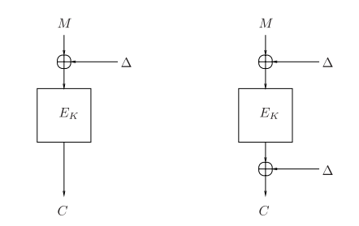
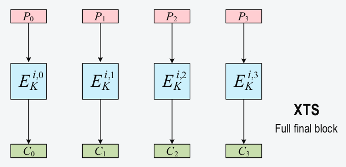

Tweaking Tweakable AES XTS mode
16 Oct 2016
Work in progress
NOTE: This post is the third in a series about the practical development of crypto systems. If you like it, check back later to see if updates have been published.
The whys of this post are explained in the Encryption Manifesto, the fundamentals of the hows in Fuse CTR Encryption. The rest of the hows will be discussed in a future post.
Summary
Whe have seen in a previous article how to build an encryption program that follows our philosophy principles. However, that program was not well suited for full-disk (or partition) encryption since it was based on AES in CTR mode.
In this article we discuss a different mode of operation, called XTS, that is commonly used for full-disk encryption. We will delve a bit into its history, reason about its strengths and weaknesses. We will also derive a simpler version of this mode that still maintain the same level of security, to be used in our encryption program.
This post is somewhat more theoric than the previous two, but given the relative obscurity of XTS I found it necessary. Still I hope you will enjoy the reading.
Legacy and History
After the standardization of DES (Data Encryption Standard) in 1977, many questions arised among security professionals regarding its security. Its classified design elements were suspicious, and its short key length (56 bits, or 55bits considering the complement property of DES) made it possible for the US government to brute-force keys in an acceptable time.
Instead of discouraging the analysis of the algorithm, this secretiveness encourage an enormous academic research on DES, aimed at uncovering its design secrets and at improving on its weaknesses.
What interest us in this article, is a particular proposal by Ronald Rivest, in 1984, to increase the strenght of DES against brute force attacks. He proposed a variant of DES using two additional keys, K1 and K2, each of 64bits (the block's length), used to XOR the plaintext before DES encryption, and the ciphertext after. This variant was called DES-X.
This simple modification of DES has proven to be very reliable, and gave rise to a series of studies that applied the same technique in different contexts.
Even and Mansour abstracted the concept and proposed in 1991 the "two key Even-Mansour scheme", creating a very simple block cipher that was also provably secure. In a quest to achieve a minimalist block cipher, their scheme was refined by Dunkelman, Keller and Shamir to use a key of only half of the original bits, but still maintaining the same level of security 1.
Even-Mansour requires a random permutation to be used between the two XORs, to break the linearity of the scheme. Particular kinds of block ciphers can be seen as families of permutation functions, where the particular permutation is selected by the key. Assuming the key is chosen at "random", a block cipher can be used instead of the random perputation in Even-Mansour. This is a basic notion to keep in mind to understand XTS (for the formal details refer to the articles in the footnotes).
Work on tweakable block ciphers. 2.
A following work, by Phillip Rogaway, described two generic constructions: XE and XEX (xor-encrypt and xor-encrypt-xor), to turn a generic block cipher into a particular kind of tweakable block cipher, suitable for hard-disk encrytion 3.
This scheme was later standardized by NIST, with some modifies, under the name of XTS (XEX tweakable block cipher with ciphertext stealing). Many of the full-disk encryption products available today are based on this standard.
After this overview on the history of XTS we can delve a bit deeper into the algorithm, and discuss how to simplify it and how to use it in our encryption program.
Understanding XTS
Before seeing how to simplify the XTS NIST standard a bit, we want to point at some peculiarities that make XTS what it is. Actually we will base our discussion on Rogaway's article3, since it is the basis for XTS.
To understand why XTS is particularly efficient when used to encrypt hard-disks, we must know a bit of discrete matematics. In particular we need to understand how to do arithmetic calculations, sums and products, on finite fields (or galois fields). But first we also need to familiarize a little with finite fields.
Basic structure of finite fields
Finite fields are mathematical structures of form (G, +, *), where G is a set of elements, + is an operation behaving like a sum, and * is an operation behaving like a product.
Since we want to be able to carry out calculations in G, these operations must also satisfy a series of axioms, called field axioms:
- Closure for sum:if a, b ∈ G, then a + b ∈ G.
- Associativity for sum:if a, b, c ∈ G, then (a + b) + c = a + (b + c).
- Commutativity for sum:if a, b ∈ G, then a + b = b + a.
- Identity element for sum:exists 0 ∈ G such that a + 0 = a, for all a ∈ G.
- Inverse for sum:for each a ∈ G
exists an inverse element b ∈ G, such that a + b = 0.
- Closure for product:if a, b ∈ G, then a * b ∈ G.
- Associativity for product:if a, b, c ∈ G, then (a * b) * c = a * (b * c).
- Commutativity for product:if a, b ∈ G, then a * b = b * a.
- Identity element for product:exists 1 ∈ G, with 1 ≠ 0, such that a * 1 = a, for all a ∈ G.
- Inverse for sum:for each a ∈ G\{0},
exists an inverse element b ∈ G, such that a * b = 1.
- Distributivity:if a, b, c ∈ G, then a * (b + c) = a * b + a * c.
We included these axioms here as a reference, but we assume the reader already know the basics of abstract algebra. 4.
We must also specify what we mean by finite field: To be "finite" a field must have a finite number of elements in its set G.
It has been demonstrated that all finite fields have a number of elements pn, where p is a prime number, and n is a positive integer.
This property makes finite fields naturally suitable for computer applications, where powers of two are very commons; for example, a 64-bits register can hold values from 0 to 264-1, in total 264 values, while AES manipulates blocks of 128 bits, for a total of 2128 values.
Arithmetic of finite fields
Now, the definition of a field is not complete without the operations that acts on the set; we must find a sum-like operation and a product-like operation that satisfy the axioms for our finite fields.
The sum-operation is easy, and we have several candidates: we could use the usual sum of integers, modulo the cardinality of |G|, so that all results lie always inside G; for |G| = 3, some examples of sums are: 1 + 1 (mod 3) = 2, and 2 + 2 (mod 3) = 1.
Another candidate for the sum-operation is simply a binary XOR; this works very well for fields with a power of two elements. If |G| = 8, then the elements of G can be represented as 8-bits integers, and the sum is the usual XOR between bytes: 2 + 7 = 00000010 ^ 00000111 = 00000101 = 5.
It is easy to prove that both these sum-operations satisfy the axioms 1-5, being associative, commutative, with identity 0, and having an inverse.
For the product-operation things get a little harder. An easy case occurs when |G| = p, with p a prime number; in this case we can just use the common product, modulo p, in a way very similar to the first sum-operation we proposed. Some examples, for p = 5, are 4 * 3 (mod 5) = 2, and 2 * 2 (mod 5) = 4. If |G| = p then this operations satisfy axioms 6-10.
The general case, however, are finite fields with pn elements; you can check by yourself that, for these fields, the product module |G| no longer works: try finding an inverse for 2 in a field with 22 = 4 elements.
Maintaining the intuition that operations should be modulo some entity, it is possible to choose a different type of entity to act like a prime number for different product operation.
One of the most interesting insights you can learn from Galois Theory is that for pn finite fields, there exists particular kinds of polynomials that behave like prime numbers: we can use polynomial product, modulo one of these polynomials, as our operation. Together with XOR sum, they satisfy all field axioms.
For fields with pn elements The, type of polynomials we are interested in are irreducible polynomials of degree n. A polynomial is "irreducible" if it cannot be factored into nontrivial polynomials over the same field. For example the polynomial x3 + x2 can be rewritten as x2 * (x + 1), and so it is not irreducible; instead the second factor (x + 1) is.
There are also particular kinds of irreducible polynomials, called primitive polynomials. A polynomial is primitive, in a finite field with |G| = pn, if:
- it has degree n;
- it has a root a ∈ G, such that {0, a0, a1, a2, ..., apn-2} = G;
Why this mathematical tour-de-force? Because these concepts are very handy when applied to 2n fields: if we use a primitive polynomial to take the modulo of the product operation in these fields, we can use the powers of 2 to generate all the elements of the field. This is exactly what XTS does in one of its steps.
The XTS mode of operation
Consider a generic mass storage device, such as an hard-disk. These devices stores data in sectors of a fixed length. Traditionally, for hard-disk, this sector length was 512 bytes. Compare this value with the block size of a modern cipher, usually 128-bits or 16 bytes: it is necessary to use some mode of operation to fill the size gap.
Consider also how data is usually saved on these devices: long sequences of data are written in consecutive sectors, starting from a sector with a lower physical position and ending with a sector with an higher position in the device.
A good mode of operation for these storage devices need to address both these characteristics, and in an efficient manner. This is precisely what XTS tries to do, and we will see here how.
If we call the storage device sector a "wide-block" and the cipher block a "narrow-block", the first thing we may say about XTS is that it is a mode that transform a narrow-block cipher into a wide-block cipher. For example it can transform an AES 128-bits block cipher into a 512 bytes sector cipher.
We can see each wide-block as indipendent from the others, and concentrate on the transition from a narrow-block to a wide-block. This is one of the keys to understand XTS.
Overview of a wide-block encryption
The images and the material exposed here are from Rogaway's article "Evaluation of Some Blockcipher Modes of Operation"5.
The following image represent the encryption of a wide-block (having full size) with XTS:
The wide-block plaintext P in subdivided in narrow-block plaintexts P0, P1, P2, P3, each of them in encrypted separately. The output ciphertexts C0, C1, C2, C3 are then joined together to form the wide-block ciphertext C.
Assuming AES as the narrow-block cipher, this image may represent the encryption of an hard-disk sector of size 16 bytes * 4 = 64 bytes.
The encription function E is represented as having three parameters: i, the wide-block number; j, the narrow-block number inside the wide-block (represented in the image by the numbers 0-3); K, the key used for encryption.
In a concrete application i may be the hard-disk sector number, j the narrow-block inside that sector, and K the encryption key derived from user's passphrase.
Notice that without the parameters i and j each narrow-block in each wide-block would be encrypted in the same identical manner. In this situation if two input plaintexts are identical, then also their output ciphertexts would be identical, leading to an ECB encrytion scheme (with all its weaknesses).
Instead i and j assure that even if two identical plaintexts occur, in two different locations, their ciphertexts are different. These parameters are said to "tweak" the underlying block cipher.
Side note: There could however be a different problem. Suppose that there exists combinations of i, j and i', j', with i ≠ i' and j ≠ j', such that for identical plaintexts the functions Ei,j,K(P) and Ei',j',K(P) produce identical ciphertexts. This would defeat the benefits of the tweaks and may pose security problems. Fortunately this occurrence is very rare, and a major point of the XTS security proof relies on this. We will not delve into this proof, refer to Rogaway's article if you are interested.
Let's see now how the encryption is actually done.
XEX and powering-up constructions
We have said before that XTS is a mode that transform a narrow-block cipher (e.g. AES) into a wide-block cipher. We also said that a wide-block ciphertext is formed combining the smaller narrow-block ciphertext, each produced separately from the others.
In fact each narrow-block plaintext is encrypted using a modified version of the chosen block cipher. This modified block cipher is said to be a tweaked version of the original one.
A tweaked cipher is obtained by adding and combining some additional parameters, beside the encryption key, to the original block cipher. These additional parameters are called tweaks (sometimes spices).
The tweaked block cipher on which XTS is based, is a modified version of the XEX algorithm proposed by Rogaway.
The basic block cipher can be described as:
E : {0,1}n ⨯ {0,1}n → {0,1}n
It takes as input an encryption key K ∈ {0,1}n, and a plaintext P ∈ {0,1}n, and to produces as output a ciphertext C ∈ {0,1}n.
Starting from this signature, we can describe the XEX tweaked cipher adding only a tweak parameter:
E' : {0,1}n ⨯ {0,1}n ⨯ T → {0,1}n
with tweak decomposable as:
T = {0,1}n ⨯ [1..2n/2]
The tweak is composed by two components. These components are generic and can be used in many different ways, but since we are dealing with a very specific application (hard-disk encryption) it is more useful to anticipate how they are used in this context.
The first component i ∈ {0,1}n, is the hard-disk sector number, represented as a binary string of n bits, inside of which there is the narrow-block to be encypted.
The second component j ∈ [1..2n/2], is the offset, inside the hard-disk sector, of the narrow-block that is going to be encrypted.
The encryption of a narrow-block is carried out by XEX as follows:
Algorithm XEX
Input:
encryption key: K ∈ {0,1}n
sector number: i ∈ {0,1}n
offset inside the sector: j ∈ [1..2n/2]
narrow-block plaintext: Pj ∈ {0,1}n
Output:
narrow-block ciphertext: Cj ∈ {0,1}n
Procedure:
let α be the ???characteristic??? (maybe should talk about this before, and just use 2 here...) (NO: primitive polynomial used to represent) the finite field, containing 2n elements, inside of which we operate.
N = E(K, i)
Δ = N * αj
Cj = E(K, Pj ⊕ Δ) ⊕ Δ
return Cj
6.
Tweaking XTS mode
Before reading the rest of this article, take some minutes to read "You don't want XTS", by Thomas & Erin Ptacek 7.
To be continued...
Footnote 1. Orr Dunkelman, Nathan Keller, and Adi Shamir. "Minimalism in Cryptography: The Even-Mansour Scheme Revisited" (mirror). Return to article.
Footnote 2. We won't explain here what exactly is a tweakable block cipher. For the formal details see: M. Liskov, R. Rivest, and D. Wagner. "Tweakable Block Ciphers" (mirror). Return to article.
Footnote 3. Phillip Rogaway. "Efficient Instantiations of Tweakable Blockciphers and Refinements to Modes OCB and PMAC" (mirror). Return to article.
Footnote 4. Weisstein, Eric W. "Finite Field." From MathWorld -- A Wolfram Web Resource (http://mathworld.wolfram.com/FiniteField.html). Return to article.
Footnote 5. Phillip Rogaway. "Evaluation of Some Blockcipher Modes of Operation" (mirror). Return to article.
Footnote 6. IEEE P1619™/D16. "Standard for Cryptographic Protection of Data on Block-Oriented Storage Devices" (mirror). Return to article.
Footnote 7. Thomas & Erin Ptacek, "You don't want XTS". Return to article.